This function computes the WAIC value of an RprobitB_fit-object.
Arguments
- x
An object of class
RprobitB_fit.- S
The number of posterior samples used for the calculation of the WAIC value. Must be greater or equal two for variance computation.
- print_progress
Set to
TRUEto print computation progress.- check_conv
Set to
TRUEto plot the convergence behavior of the WAIC calculation.- ncores
Computation is parallelized, set the number of cores.
Value
Invisibly returns a list of
waic, the WAIC value,se_waic, the standard error ofwaic,p_si, the matrix of probabilities of each observation for theSdifferent posterior samples,S, the number of posterior samples,lppd, the log pointwise predictive density,p_waic, the effective number of parameters,p_waic_i, the vector of summands ofp_waic.
Examples
data <- simulate_choices(
form = choice ~ cov | 0,
N = 10,
T = 10,
J = 2,
seed = 1
)
x <- mcmc(data, R = 1000)
#> Iteration 10 of 1000
Iteration 20 of 1000
Iteration 30 of 1000
Iteration 40 of 1000
Iteration 50 of 1000
Iteration 60 of 1000
Iteration 70 of 1000
Iteration 80 of 1000
Iteration 90 of 1000
Iteration 100 of 1000
Iteration 110 of 1000
Iteration 120 of 1000
Iteration 130 of 1000
Iteration 140 of 1000
Iteration 150 of 1000
Iteration 160 of 1000
Iteration 170 of 1000
Iteration 180 of 1000
Iteration 190 of 1000
Iteration 200 of 1000
Iteration 210 of 1000
Iteration 220 of 1000
Iteration 230 of 1000
Iteration 240 of 1000
Iteration 250 of 1000
Iteration 260 of 1000
Iteration 270 of 1000
Iteration 280 of 1000
Iteration 290 of 1000
Iteration 300 of 1000
Iteration 310 of 1000
Iteration 320 of 1000
Iteration 330 of 1000
Iteration 340 of 1000
Iteration 350 of 1000
Iteration 360 of 1000
Iteration 370 of 1000
Iteration 380 of 1000
Iteration 390 of 1000
Iteration 400 of 1000
Iteration 410 of 1000
Iteration 420 of 1000
Iteration 430 of 1000
Iteration 440 of 1000
Iteration 450 of 1000
Iteration 460 of 1000
Iteration 470 of 1000
Iteration 480 of 1000
Iteration 490 of 1000
Iteration 500 of 1000
Iteration 510 of 1000
Iteration 520 of 1000
Iteration 530 of 1000
Iteration 540 of 1000
Iteration 550 of 1000
Iteration 560 of 1000
Iteration 570 of 1000
Iteration 580 of 1000
Iteration 590 of 1000
Iteration 600 of 1000
Iteration 610 of 1000
Iteration 620 of 1000
Iteration 630 of 1000
Iteration 640 of 1000
Iteration 650 of 1000
Iteration 660 of 1000
Iteration 670 of 1000
Iteration 680 of 1000
Iteration 690 of 1000
Iteration 700 of 1000
Iteration 710 of 1000
Iteration 720 of 1000
Iteration 730 of 1000
Iteration 740 of 1000
Iteration 750 of 1000
Iteration 760 of 1000
Iteration 770 of 1000
Iteration 780 of 1000
Iteration 790 of 1000
Iteration 800 of 1000
Iteration 810 of 1000
Iteration 820 of 1000
Iteration 830 of 1000
Iteration 840 of 1000
Iteration 850 of 1000
Iteration 860 of 1000
Iteration 870 of 1000
Iteration 880 of 1000
Iteration 890 of 1000
Iteration 900 of 1000
Iteration 910 of 1000
Iteration 920 of 1000
Iteration 930 of 1000
Iteration 940 of 1000
Iteration 950 of 1000
Iteration 960 of 1000
Iteration 970 of 1000
Iteration 980 of 1000
Iteration 990 of 1000
Iteration 1000 of 1000
RprobitB:::waic(x = x, S = 10, check_conv = TRUE)
